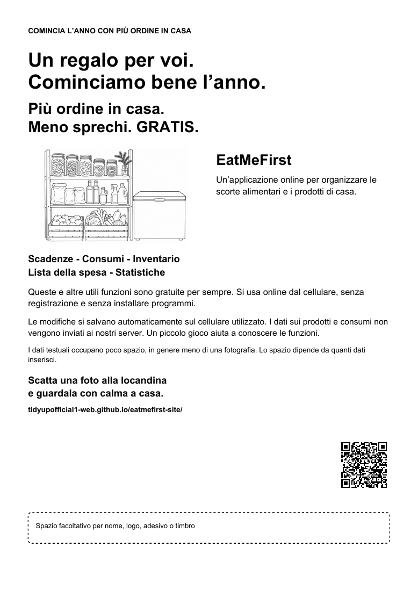
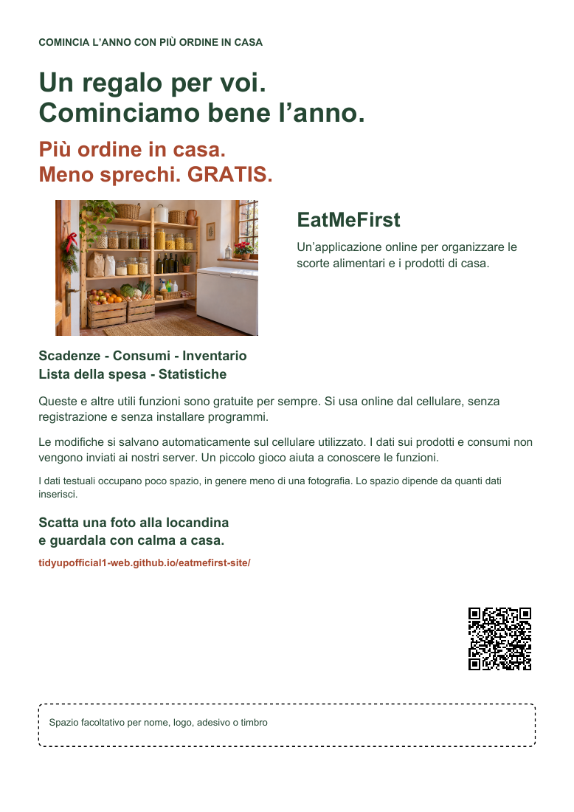

Bianco e nero · anonima
Formato A4. Fondo bianco; logo o timbro facoltativi nella versione dedicata.
Scarica PDFScegliete il formato più comodo. Foto e disegno mostrano scorte di casa, cassette di frutta e un congelatore a pozzetto. Stampate la locandina per il punto di ritiro oppure usatela come immagine sul vostro sito.
Formato A4. Fondo bianco; logo o timbro facoltativi nella versione dedicata.
Scarica PDF
Formato A4. Fondo bianco; logo o timbro facoltativi nella versione dedicata.
Scarica PDFFormato A4. Fondo bianco; logo o timbro facoltativi nella versione dedicata.
Scarica PDF
Formato A4. Fondo bianco; logo o timbro facoltativi nella versione dedicata.
Scarica PDFNessun invio parte da questa pagina. Scegliete voi il canale e i destinatari.
Potete usare questo testo o accompagnarlo con una locandina. Il collegamento per i soci porta al sito principale: lì si scopre la storia di EatMeFirst e poi si apre l’applicazione.
Scarica il testo dell’annuncio